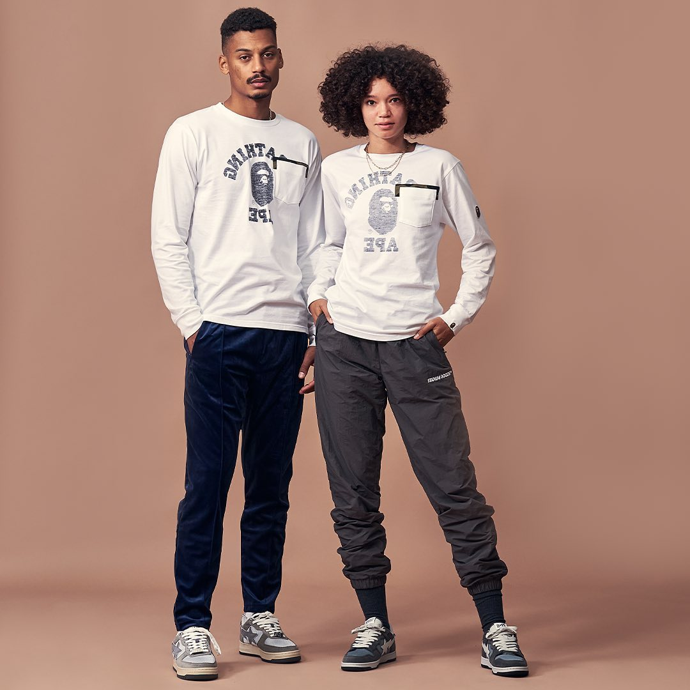
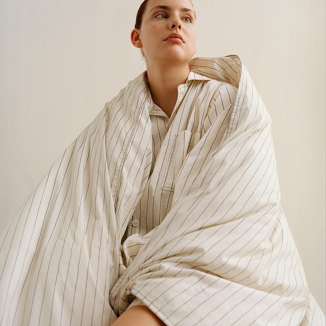
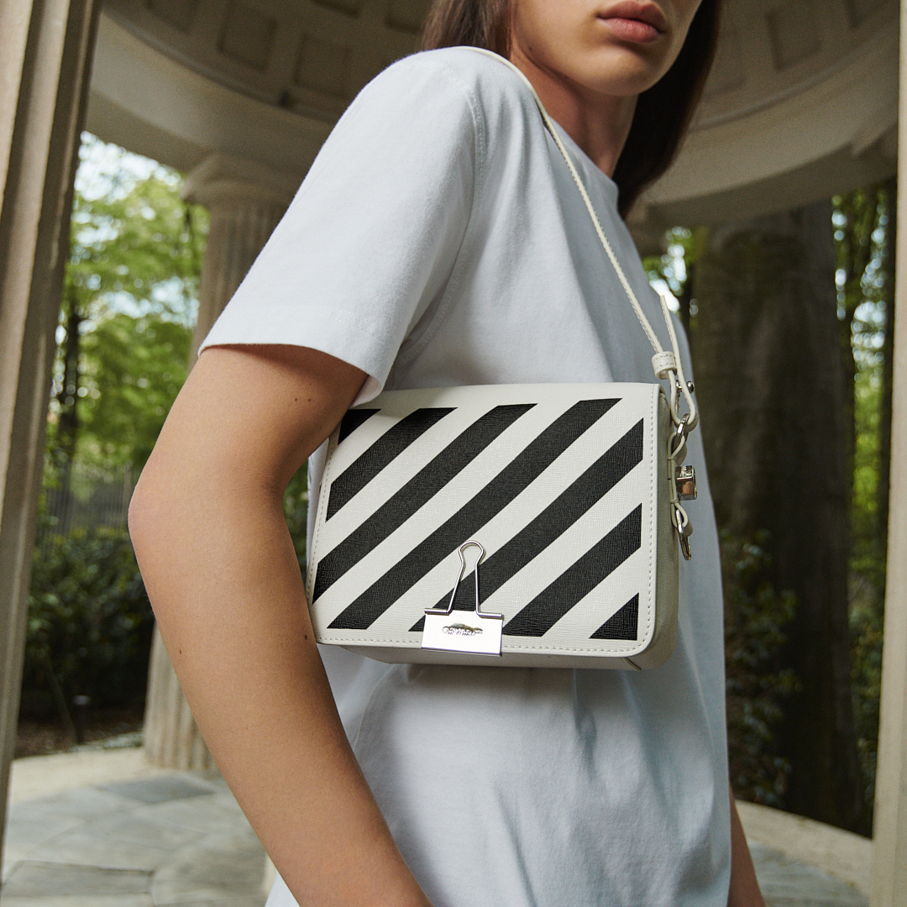
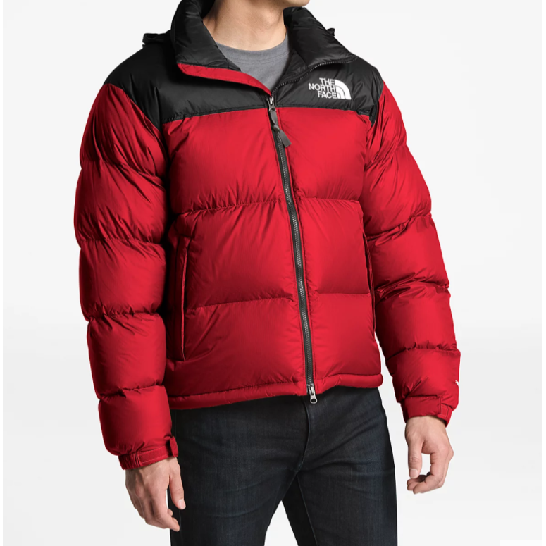

Situated in the heart of Tokyo, one of the leading fashion hubs of the world, Nowhere Co., Ltd. strives to introduce Japanese fashion culture to the world. Since the brand's establishment in 1993, it has remained as a symbol of street fashion for more than 28 years. Thus far, it has produced iconic design items, original patterns and characters such as "APE HEAD", "BAPE® CAMO", "BAPE STA™", "SHARK HOODIE" and "BABY MILO®" etc.
It has now expanded into Mens', Ladies and Kids line and is carried throughout stores in Japan and also sold in US, UK, France, China and various Asian countries.

It has also created successful collaborations with established international brands and reputable artists. These collaborations are recognized as being genre less and flexible, not limited to fashion and apparel categories only.
The world has its eyes on A BATHING APE® and there is no stopping it………
STÜSSY
In the late ’80s and early ’90s, a brand was born from the Southern California surf scene and swept through the clothing landscape to redefine the look and ideology of casualwear. That brand was Stüssy, a label that grew organically from youth movements and inadvertently revolutionized the clothing business.
The brand grew during a time when epochal shifts that now frame contemporary popular culture were taking place. In the music scene the late ’70s gave us punk, while the early ’80s brought us a new DIY type of music called rap. Punk broke creative and aesthetic barriers and taught us that anyone could have a band. Rap pushed social boundaries and explored the ideas of remixing and sampling.

These new ideas and territories created a new modern platform for fashion and cultural expression. The designs and overall aesthetic touched on references from a range of underground subcultures that resonated with Stüssy. This approach appealed to a worldwide network of creative youth who shared a common interest in surf-culture, skating and music. Limited distribution fuelled the desire internationally, and those who wanted the gear found it and felt a part of something bigger in the process.
With a strong network of tribe members wearing the brand in clubs and on the scene across the globe, the Stüssy message spread organically. The brand was committed to producing relevant, good quality clothing at a reasonable price available only at very select stores worldwide in limited quantities. This was an entirely new concept at the time, which has since been used to varying degrees of success.
Off-White ™
The company was first founded as "PYREX VISION" by Virgil Abloh in the Italian city of Milan in 2012. Abloh then rebranded the company as Off-White, which he describes as "the grey area between black and white as the color off-white" to the fashion world.
It has shown collections at Paris Fashion Week shows, and is sold in retail stores in Hong Kong, Tokyo, Milan, London and New York.
In August 2019, José Neves, owner of Farfetch, purchased New Guards Group, the parent organization of Off-White for US$675 million.

Off-White has collaborated with brands and designers such as Nike, Levi, Rimowa, Jimmy Choo, IKEA, Moncler, Browns, Warby Parker, SSENSE, Sunglass Hut, Champion, Evian, Converse, Dr. Martens, Barneys New York, Umbro, Timberland, Takashi Murakami, Heron Preston, ASAP Rocky, Byredo, Boys Noize, Le Bon Marché, Asspizza and Kerwin Frost.
In July 2021, LVMH Moët Hennessy Louis Vuitton announced it would be taking a 60% stake in Off-White, with founder Virgil Abloh, currently the creative director of menswear for Louis Vuitton, retaining the remaining 40%.
THE NORTH FACE, A VF COMPANY
Through the 1960s, The North Face brand cherished a following amongst avid outdoor athletes and began sponsoring expeditions to some of the most far-flung, still largely untouched corners of the globe. This launched a proud tradition which continues in full force today and constantly reinforces The North Face mantra, Never Stop Exploring™.
By the early 1980s, The North Face was taking exploration to the outer limits of the ski world, adding extreme skiwear to the product offering. These were the days of pastels, neons, hair dye, and mohawks; they laid the groundwork for today's free-spirited snowsports athletes. By the end of the decade, The North Face became the only supplier in the United States to offer a comprehensive collection of high-performance outerwear, skiwear, sleeping bags, packs and tents.
The 1990s ushered in an era during which The North Face further broadened the outdoor world it helps athletes to explore. The decade saw our debut in the sportswear market with the launch of Tekware™, an innovative collection designed to provide rock climbers, backpackers, hikers, trail runners, and outdoor enthusiasts with the ultimate fit and function. The North Face half dome logo began to appear with greater regularity on ultramarathon courses, high-country trails, and big walls. And, as the calendar clicked toward a new millennium, The North Face launched its own line of trekking and trail-running shoes to ultimately address the head-to-toe needs of those always striving for the next horizon.

The North Face delivers an extensive line of performance apparel, equipment, and footwear. We push the boundaries of innovation so that you can push the boundaries of exploration. We remain deeply proud to be the first choice of the world's most accomplished climbers, mountaineers, extreme skiers, snowboarders, endurance runners, and explorers.
There's little telling what the next 50 years hold for us. However, there is one bedrock of certainty: The North Face will maintain an unwavering commitment to pushing the limits of innovation and design, so that you can push your limits outdoors. Never Stop Exploring.